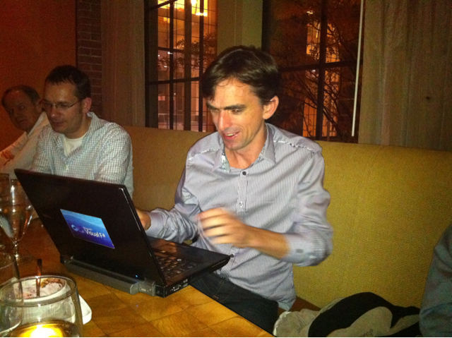
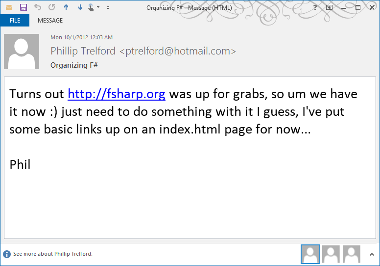
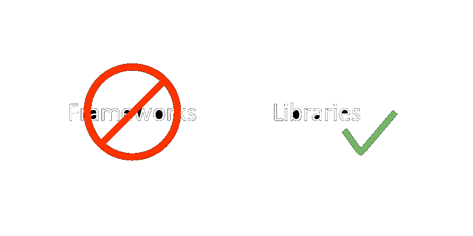
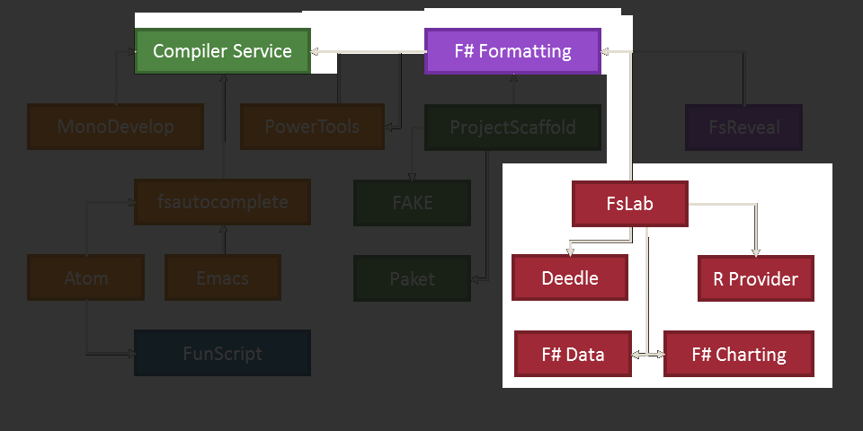

type T =
{State: obj;
Child: obj;}
Full name: index.T
{State: obj;
Child: obj;}
Full name: index.T
T.State: obj
T.Child: obj
type 'T option = Option<'T>
Full name: Microsoft.FSharp.Core.option<_>
Full name: Microsoft.FSharp.Core.option<_>
val location : unit -> string
Full name: index.location
Full name: index.location
val start : t:T -> T
Full name: index.start
Full name: index.start
val t : T
val child : obj
union case Option.Some: Value: 'T -> Option<'T>
val send : msg:'a -> t:T -> 'b
Full name: index.send
Full name: index.send
val msg : 'a
module Option
from Microsoft.FSharp.Core
from Microsoft.FSharp.Core
val iter : action:('T -> unit) -> option:'T option -> unit
Full name: Microsoft.FSharp.Core.Option.iter
Full name: Microsoft.FSharp.Core.Option.iter
val stdin<'T> : System.IO.TextReader
Full name: Microsoft.FSharp.Core.Operators.stdin
Full name: Microsoft.FSharp.Core.Operators.stdin
val ignore : value:'T -> unit
Full name: Microsoft.FSharp.Core.Operators.ignore
Full name: Microsoft.FSharp.Core.Operators.ignore
val parse : path:string -> text:string -> cb:'a -> service:'b -> 'c
Full name: index.parse
Full name: index.parse
val path : string
val text : string
val cb : 'a
val service : 'b
val str : string
val ctor : obj
Full name: index.ctor
Full name: index.ctor
val meths : seq<obj>
Full name: index.meths
Full name: index.meths
BindingFlags.DeclaredOnly ||| BindingFlags.Public ||| BindingFlags.Instance
/// Creates "(fun p1 .. pn -> <body>)" and "[p1; ..; pn]"
/// (which is used when generating boxed lambdas that pass parameters to the actual function)
let createParameterPassing (m:MethodBase) =
let paramVars = m.GetParameters() |> Array.mapi (fun i p -> Var(sprintf "p%d" i, p.ParameterType))
let paramArgs = [ for v in paramVars -> Expr.Var(v) ]
let lambdaConstr = paramVars |> Seq.fold (fun fn var -> fun body -> Expr.Lambda(var, fn body)) id
lambdaConstr, paramArgs
let exportFunctions =
[ for m in meths ->
let tv = new Var("this", typ)
let lambdaConstr, paramArgs = createParameterPassing m
Expr.Lambda(tv, lambdaConstr (Expr.Call(Expr.Var(tv), m, paramArgs))) ]
let exportCtor =
Expr.Coerce
( Expr.Lambda(Var("ign", typeof<unit>), Expr.NewObject(typ.GetConstructor [||], [])),
typeof<obj> )
let funcs = [ for f in exportFunctions -> Expr.Coerce(f, typeof<obj>)]
/// (which is used when generating boxed lambdas that pass parameters to the actual function)
let createParameterPassing (m:MethodBase) =
let paramVars = m.GetParameters() |> Array.mapi (fun i p -> Var(sprintf "p%d" i, p.ParameterType))
let paramArgs = [ for v in paramVars -> Expr.Var(v) ]
let lambdaConstr = paramVars |> Seq.fold (fun fn var -> fun body -> Expr.Lambda(var, fn body)) id
lambdaConstr, paramArgs
let exportFunctions =
[ for m in meths ->
let tv = new Var("this", typ)
let lambdaConstr, paramArgs = createParameterPassing m
Expr.Lambda(tv, lambdaConstr (Expr.Call(Expr.Var(tv), m, paramArgs))) ]
let exportCtor =
Expr.Coerce
( Expr.Lambda(Var("ign", typeof<unit>), Expr.NewObject(typ.GetConstructor [||], [])),
typeof<obj> )
let funcs = [ for f in exportFunctions -> Expr.Coerce(f, typeof<obj>)]
val functionArray : obj
Full name: index.functionArray
Full name: index.functionArray
val typeof<'T> : System.Type
Full name: Microsoft.FSharp.Core.Operators.typeof
Full name: Microsoft.FSharp.Core.Operators.typeof
type obj = System.Object
Full name: Microsoft.FSharp.Core.obj
Full name: Microsoft.FSharp.Core.obj
val exportCtor : obj
Full name: index.exportCtor
Full name: index.exportCtor
val funcs : obj list
Full name: index.funcs
Full name: index.funcs
val coreJS : string
Full name: index.coreJS
Full name: index.coreJS
val moduleJS : string list
yield "var child_process = require('child_process');"
yield "window.$ = require('jquery');"
yield ""
yield "function wrappedFunScript() { \n" + coreJS + "\n }"
yield "var _funcs = wrappedFunScript();"
yield "var _self = _funcs[0]();"
yield ""
yield "window.$ = require('jquery');"
yield ""
yield "function wrappedFunScript() { \n" + coreJS + "\n }"
yield "var _funcs = wrappedFunScript();"
yield "var _self = _funcs[0]();"
yield ""
val i : int
val m : obj
module Seq
from Microsoft.FSharp.Collections
from Microsoft.FSharp.Collections
val zip : source1:seq<'T1> -> source2:seq<'T2> -> seq<'T1 * 'T2>
Full name: Microsoft.FSharp.Collections.Seq.zip
Full name: Microsoft.FSharp.Collections.Seq.zip
let parNames = String.concat "" [ for j in 1 .. m.GetParameters().Length -> sprintf "p%i" j ]
let parArgs = String.concat "" [ for j in 1 .. m.GetParameters().Length -> sprintf "(p%i)" j ]
let parArgs = String.concat "" [ for j in 1 .. m.GetParameters().Length -> sprintf "(p%i)" j ]
Multiple items
val string : value:'T -> string
Full name: Microsoft.FSharp.Core.Operators.string
--------------------
type string = System.String
Full name: Microsoft.FSharp.Core.string
val string : value:'T -> string
Full name: Microsoft.FSharp.Core.Operators.string
--------------------
type string = System.String
Full name: Microsoft.FSharp.Core.string
Multiple items
type AutoOpenAttribute =
inherit Attribute
new : unit -> AutoOpenAttribute
new : path:string -> AutoOpenAttribute
member Path : string
Full name: Microsoft.FSharp.Core.AutoOpenAttribute
--------------------
new : unit -> AutoOpenAttribute
new : path:string -> AutoOpenAttribute
type AutoOpenAttribute =
inherit Attribute
new : unit -> AutoOpenAttribute
new : path:string -> AutoOpenAttribute
member Path : string
Full name: Microsoft.FSharp.Core.AutoOpenAttribute
--------------------
new : unit -> AutoOpenAttribute
new : path:string -> AutoOpenAttribute
namespace System
type Type =
inherit MemberInfo
member Assembly : Assembly
member AssemblyQualifiedName : string
member Attributes : TypeAttributes
member BaseType : Type
member ContainsGenericParameters : bool
member DeclaringMethod : MethodBase
member DeclaringType : Type
member Equals : o:obj -> bool + 1 overload
member FindInterfaces : filter:TypeFilter * filterCriteria:obj -> Type[]
member FindMembers : memberType:MemberTypes * bindingAttr:BindingFlags * filter:MemberFilter * filterCriteria:obj -> MemberInfo[]
...
Full name: System.Type
inherit MemberInfo
member Assembly : Assembly
member AssemblyQualifiedName : string
member Attributes : TypeAttributes
member BaseType : Type
member ContainsGenericParameters : bool
member DeclaringMethod : MethodBase
member DeclaringType : Type
member Equals : o:obj -> bool + 1 overload
member FindInterfaces : filter:TypeFilter * filterCriteria:obj -> Type[]
member FindMembers : memberType:MemberTypes * bindingAttr:BindingFlags * filter:MemberFilter * filterCriteria:obj -> MemberInfo[]
...
Full name: System.Type
chartStyle ch, Dock = DockStyle.Fill, Width=500, Height=300
union case Option.None: Option<'T>
s |> mapSteps sitms fst (function Some k -> td (k.ToString()) | _ -> td " ... "),
s |> mapSteps sitms snd (function Some v -> formatValue floatFormat "N/A" (OptionalValue.asOption v) | _ -> td " ... "),
s |> mapSteps sitms id (*[omit:...]*)(fun _ -> AlignDefault)
s |> mapSteps sitms snd (function Some v -> formatValue floatFormat "N/A" (OptionalValue.asOption v) | _ -> td " ... "),
s |> mapSteps sitms id (*[omit:...]*)(fun _ -> AlignDefault)
| :? IFrame as f ->
// Pretty print frame!
{new IFrameOperation<_> with
member x.Invoke(f) =
let heads = f.ColumnKeys |> mapSteps fcols id (function Some k -> td (k.ToString()) | _ -> td " ... ")
let aligns = f.ColumnKeys |> mapSteps fcols id (fun _ -> AlignDefault)
let rows =
f.Rows |> Series.observationsAll |> mapSteps frows id (fun item ->
let def, k, data =
match item with
| Some(k, Some d) -> "N/A", k.ToString(), Series.observationsAll d |> Seq.map snd
| Some(k, _) -> "N/A", k.ToString(), f.ColumnKeys |> Seq.map (fun _ -> None)
| None -> " ... ", " ... ", f.ColumnKeys |> Seq.map (fun _ -> None)
let row = data |> mapSteps fcols id (function Some v -> formatValue floatFormat def v | _ -> td " ... ")
(td k)::row )
Some [
InlineMultiformatBlock("<div class=\"deedleframe\">","\\vspace{1em}")
TableBlock(Some ([]::heads), AlignDefault::aligns, rows)
InlineMultiformatBlock("</div>","\\vspace{1em}")
] }
|> f.Apply
| :? Matrix<float> as m -> Some [ MathDisplay (m |> formatMatrix (formatMathValue floatFormat)) ]
| :? Matrix<float32> as m -> Some [ MathDisplay (m |> formatMatrix (formatMathValue floatFormat)) ]
| :? Vector<float> as v -> Some [ MathDisplay (v |> formatVector (formatMathValue floatFormat)) ]
| :? Vector<float32> as v -> Some [ MathDisplay (v |> formatVector (formatMathValue floatFormat)) ]
// Pretty print frame!
{new IFrameOperation<_> with
member x.Invoke(f) =
let heads = f.ColumnKeys |> mapSteps fcols id (function Some k -> td (k.ToString()) | _ -> td " ... ")
let aligns = f.ColumnKeys |> mapSteps fcols id (fun _ -> AlignDefault)
let rows =
f.Rows |> Series.observationsAll |> mapSteps frows id (fun item ->
let def, k, data =
match item with
| Some(k, Some d) -> "N/A", k.ToString(), Series.observationsAll d |> Seq.map snd
| Some(k, _) -> "N/A", k.ToString(), f.ColumnKeys |> Seq.map (fun _ -> None)
| None -> " ... ", " ... ", f.ColumnKeys |> Seq.map (fun _ -> None)
let row = data |> mapSteps fcols id (function Some v -> formatValue floatFormat def v | _ -> td " ... ")
(td k)::row )
Some [
InlineMultiformatBlock("<div class=\"deedleframe\">","\\vspace{1em}")
TableBlock(Some ([]::heads), AlignDefault::aligns, rows)
InlineMultiformatBlock("</div>","\\vspace{1em}")
] }
|> f.Apply
| :? Matrix<float> as m -> Some [ MathDisplay (m |> formatMatrix (formatMathValue floatFormat)) ]
| :? Matrix<float32> as m -> Some [ MathDisplay (m |> formatMatrix (formatMathValue floatFormat)) ]
| :? Vector<float> as v -> Some [ MathDisplay (v |> formatVector (formatMathValue floatFormat)) ]
| :? Vector<float32> as v -> Some [ MathDisplay (v |> formatVector (formatMathValue floatFormat)) ]
The big F# and open-source love story
Tomas Petricek, F# Works
@tomaspetricek
| http://tomasp.net
| http://fsharpworks.com
open-source = community + code
History of F# and open-source

F#, before it was cool! Before 2010

How to get 1500 followers in 10 minutes?
Guys, Don Syme is on twitter
@dsyme he is about to announce something huge. Everyone
follow!
— Miguel de Icaza (@migueldeicaza)
November 5, 2010F# Goes Open Source 11 November 2010

The birth of the F# Foundation October 2012
Contributing to Visual F# 14 May 2014
Visual FSharp Tools is accepting
community contributions to the FSharp compiler, FSI and core libraries:
http://t.co/INDJWPZYUN #fsharp
—
Visual F# Team (@VisualFSharp) May 14, 2014Moving to GitHub 13 January 2015
The day has arrived: Visual #fsharp
has moved to Github:https://t.co/HbVqEmAeGo Blog: http://t.co/bsABvO6epC
href="http://t.co/IxLtndj15y">pic.twitter.com/IxLtndj15y
— Visual F# Team (@VisualFSharp)
January 13, 2015(Some of the)
F# community projects
Some F# community projects

Some F# community projects

Some F# community projects

Some F# community projects
- Important "enabler" projects
- Trust in other OSS projects
- Compositional library design
Why people trust other OSS projects?
- Community that builds things!
- Documentation, tests, builds...
- Common structure & common style
Slow development methodology
Slow development methodology

Slow development methodology
F# Snippets web site |
Sept 2010 |
Markdown parser (TryJoinads) |
Jan 2012 |
F# Data documentation |
Jan 2013 |
Deedle + ProjectScaffold |
Oct 2013 |
FsLab Journal |
Apr 2014 |
FsReveal project |
Jul 2014 |
Slow development methodology
- Start with experiments
- Share & keep them for later
- Wrap useful things in libraries
- Add docs & make them useable
- Follow a theme, not a specific goal
- Figure out what you do along the way
Libraries and frameworks

Libraries and frameworks
Libraries and frameworks

Interesting integration points
Atom editor bindings
Atom editor bindings

Calling fsautocomplete from Atom
1: 2: 3: 4: 5: 6: 7: 8: 9: 10: 11: 12: 13: |
type T = { State:State; Child:ChildProcess option } let location () = Globals.atom.packages.packageDirPaths.[0] + "/core/bin/fsautocomplete.exe" let start t = let child = location () |> Globals.spawn { t with State = State.On; Child = Some child } let send msg t = t.Child |> Option.iter (fun c -> c.stdin.write msg |> ignore) |
1: 2: 3: |
let parse path text cb service = let str = "parse \"" + path + "\"\n" + text + "\n<<EOF>>\n" service |> AutocompleteService.send str |
Generating Atom bindings with FunScript
1: 2: 3: 4: 5: 6: |
// We generate F# quotation that returns all the // methods that we want to expose from the class... let ctor = typ.GetConstructor([||]) let meths = typ.GetMethods(...) (Wrap functions using quotations) let functionArray = Expr.NewArray(typeof<obj>, exportCtor::funcs) |
1: 2: |
// Call FunScript to do the translation! let coreJS = Compiler.Compile(functionArray) |
1: 2: 3: 4: 5: 6: 7: 8: 9: 10: 11: |
// Now we just wrap the generated JavaScript... let moduleJS = [ yield "var CompositeDisposable = require('atom').CompositeDisposable;" (Some more JavaScript) yield "module.exports = " + moduleName + " = {" for i, m in Seq.zip [1 .. meths.Length] meths do Helper bindings yield m.Name + ": function(" + parNames + ") {" yield " return _funcs[" + string i + "](_self)" + parArgs + "; }" + ( if i = meths.Length then "" else "," ) yield "};" ] |
FsLab Journal runner
FsLab Journal runner
Improving library interop
1: 2: 3: 4: 5: 6: 7: |
[<AutoOpen>] module FSharpChartingExtensions = type FSharp.Charting.Chart with static member Line(data:Series<'K, 'V>, ?Name, ?Title, ?Labels, ?Color, ?XTitle, ?YTitle) = Chart.Line(Series.observations data, ?Name=Name, ?Title=Title, ?Labels=Labels, ?Color=Color, ?XTitle=XTitle, ?YTitle=YTitle) |
1: 2: 3: 4: 5: 6: |
module Frame = let inline toMatrix frame = frame |> Frame.toArray2D |> DenseMatrix.ofArray2 module Matrix = let inline toFrame matrix = matrix |> Matrix.toArray2 |> Frame.ofArray2D |
Evaluating snippets in Journal
1: 2: 3: 4: 5: 6: 7: 8: 9: 10: 11: 12: 13: 14: 15: 16: 17: 18: 19: 20: 21: 22: |
/// Builds FSI evaluator that can render /// System.Image, F# Charts, series & frames let createFsiEvaluator root output failedHandler = let transformation (value:obj, typ:System.Type) = match value with | :? ChartTypes.GenericChart as ch -> ( use ctl = new ChartControl(...) ch.CopyAsBitmap().Save(output @@ "images" @@ file) ) Some [ Paragraph [DirectImage ("", (root + "/images/" + file, None))] ] | SeriesValues s -> let heads, row, aligns = ... [ InlineMultiformatBlock("<div class=\"deedleseries\">", "\\vspace{1em}") TableBlock(Some ((td "Keys")::heads), AlignDefault::aligns, [ (td "Values")::row ]) InlineMultiformatBlock("</div>","\\vspace{1em}") ] |> Some (Format Deedle frames, Math.NET Matrices etc.) | _ -> None // Create FSI evaluator, register transformations & return let fsiEvaluator = FsiEvaluator() fsiEvaluator.RegisterTransformation(transformation) fsiEvaluator |
Conclusions
F# open-source!
Open-source is an accepted model
- Core libraries are open-source
- Same structure & style helps
Slow development methodology
- Very compositional design
- Scripts to prototypes to libraries
- Figure thing out as you go
Thank you!
Tomas Petricek, F# Works
@tomaspetricek
| http://tomasp.net
| http://fsharpworks.com